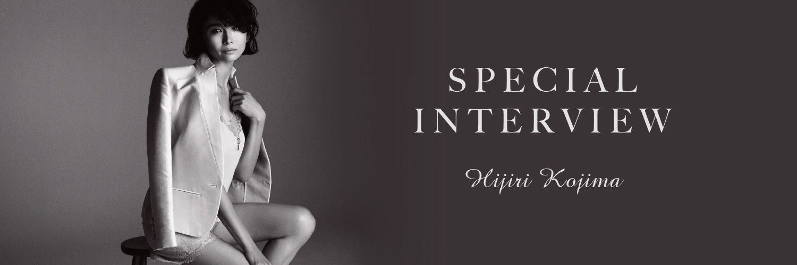
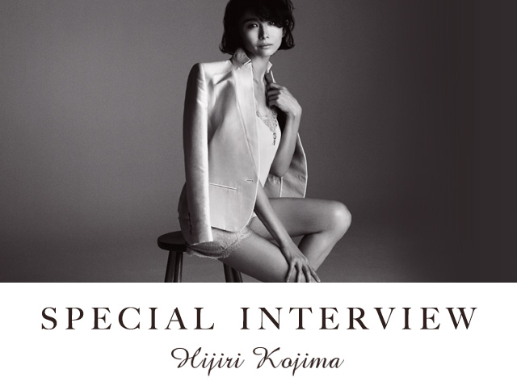

 
日常の積み重ねが大切だと思います」
Our story
ー私服がメンズライクだったり、撮影中も照れて
モニターを見なかったり…。
セクシーなイメージがあったのですが、
シャイでボーイッシュな印象が意外でした。
普段はすっぴんで、フラットシューズとかパンツばかり。
ヒールは一切はかないです、上手に歩けないので（笑）。
TVでセクシーな役を演じたりすると、友達には「いつもと全然違うね」ってびっくりされます。
Relation
ー今回のテーマは「咲く女」。
小島さんはTVでも舞台でも華のある存在感を
放っています。それはどこからくるんでしょうか？
ええっ？いえいえ、それは自分じゃ分からないです（笑）。でも、役を演じていても、何をしていても、そこに表れるのは日常の自分かなって。他の方が演じればまた違ったものになるでしょうし。日常の積み重ねが大事だなと思っています。例えば山に行ったり、旅をしたり、映画を観たり。好奇心をもって行動していれば、いきいきとしていられるのかな。好奇心だけはすごくあるので。
Private
ー美しくいるために、食事や運動など
気を付けていることはありますか？
家で料理をするのが好きで、玄米とお味噌汁、お魚みたいな和食が多いですね。若い頃はマクロビオティックに凝りすぎてしまったこともあったけれど、今はなるべくいろんな食材を満遍なく。外で食べる時はお肉もおいしくいただいてます。楽しく食べると脳が満足して食べ過ぎない。それが一番のダイエットだなって最近思って（笑）。昔通っていたジムやパーソナルトレーニングも今はやめて、外でジョギングしたり歩いたり。楽しみながらできることだけですね。
Message
ー女性が歳を重ねても
華やかに咲くためのアドバイスをお願いします。
私が知りたいです（笑）。
でも、結局外見を飾っているよりは、中身が充実している人が魅力的なんだろうな。
最近石田えりさんと舞台でご一緒したんですが、飾り気のない気さくな方で、だけどツヤツヤしていて。お話を伺ったら、50歳になってからサーフィンを始めたり、半年間外国にも留学されたそうなんです。自分がどう見られるかより、自分がやりたいことに潔く向かっていく。そういうことが色気や人間的な魅力、いろんなことにつながってくるんじゃないでしょうか。
私も以前は、分かりやすいブランドものを持ったりとか、きらびやかなものが好きだったりとか、そういうことをいろいろ経て、今があるので。だんだん、ちょっとずつ自分らしさが分かってきた気がします。
Salon Like
ー今日着ていただいたようなレースのランジェリーは？
部屋着はTシャツにスウェット（笑）。肌ざわりが良くて、シンプルなものが好きです。でもピンクのキャミソールの上下（アンティークフラワーシリーズ）は、あったら素敵だろうなって思いました。
背中の上質な隙は、
女らしさの新しい扉。
DETAIL
ハイクラスなリジッドリバーレースは透明度が高く、素肌に花々をのせたよう。バック上部のレースにはくるみボタンのディテールを加えて、ミステリアスな魅力が漂います。身生地は上品な光沢のあるジョーゼット。「ショートパンツ」はジョーゼット生地をベースに、リバーレースをふんだんに重ねました。
アンティークフラワーキャミ
￥4,800円＋税

アンティークフラワーショートパンツ
￥4,800円＋税
Profile
小 島 聖 (こじま・ひじり)
1976年生まれ。1989年、NHK大河ドラマ『春日局』でデビュー。柔らかな雰囲気と感性豊かな表現力で、映画・TVドラマ・CMなどの映像作品でコンスタントに活躍。1999年には、第54回毎日映画コンクール女優助演賞を受賞。舞台女優としての評価も高く、話題の演出家の舞台に次々と出演、新たな魅力を発揮している。
WEBSITE：http://www.flyingbox.co.jp